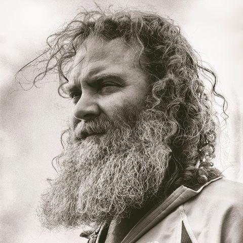

1972
Jason Myers is a prolific multi-disciplinary American artist with studios in Indiana and the Netherlands.
Myers received his bachelor’s degree from the Kansas City Art Institute and his MFA from American University.
EDUCATION
1995-1998 BFA Kansas City Art Institute
1998-2000 MFA American University
MUSEUM EXHIBITIONS
2018 Mint Museum of Art, Post WW2 Art
2018 Museum De Fundati, RAW exhibition with Size Does
2017 Polk Museum of Art, STATUS: FLUID/DYNAMIC solo exhibit
2017 Cornell Museum of Art, LIT exhibition
May 10-Sept 1, 2019 Art Museum of Greater Lafayette, STATUS: FLUID/DYNAMIC solo exhibit
MUSEUM AND CORPORATE COLLECTIONS
Indianapolis Museum of Art Permanent Collection
Art Museum of Greater Lafayette Permanent Collection
Conrad Hotel Corporate Collection
Christel House Corporate Collection
Citadel Investments Corporate Collection
Kite Corporate Collection
Pense Hensel Corporate Collection
Christel DeHaan Linden House Collection
Watkins Gallery Collection, American University
Leeman and Burns Corporate Collection
Jordis-Verlee Corporate Collection
Barbra Rose Collection
Kansas City Art Institute Permanent Collection
Sacknoff of KCAI Collection
Linden House Sculpture Garden Collection
The Late Show Collection
Vincennes University Permanent Collection
EXHIBITIONS AND FAIRS
Art Miami
Art New York
Art Hong Kong
Art Amsterdam
Art Hauge
Art Chicago
Art LA
Art Shanghai
Scope Miami
LA Contemporary Art Fair
Art Cologne
Art Houston
The Dutch Art Fair
Art Singapore
Houston Fine Art Fair
Art Silicone Valley / San Francisco
Miami International Art Fair
Art Palm Beach
Art Aspen
Art San Antonio
Art Breda Contemporary Art Fair
Scope NY
Art Boca
Art Nocturne Contemporary Art Fair
Affordable Art Fair, Hong Kong
Art Hamptons
Affordable Art Fair, NY
Rotterdam Contemporary Art Fair
Spring Masters, NY
Palm Beach Modern and Contemporary
Myers has built upon his rich experience in different media, many of which he has taught at University level, and combined this experience with consistent evolution of both his style and technique. This resulted in a unique combination of traditional artistic and industrial raw materials in his current work – work in which technology is married to economics and the feeling of utter alienation haunts the figures populating the works. His artwork invites the use of such materials as steel, resin and computer generated prints. Complex, layered and exquisitely executed, Myers’ work often questions our current political and socioeconomic environment.
Forgoing the “typical trajectory” perhaps expected from modern-day artists — a Brooklyn studio, numerous assistants – Myers instead opts for solitary path. The majority of the work he creates takes a year to complete from its conception. Myers’ determination and dedication to his art is captivating, leaving lasting impressions on its viewers.
With works exhibited across the United States and abroad, Myers’ acclaim has only grown in the past several years. The artist’s first solo museum exhibit, “STATUS: fluid/dynamic”, took place at The Polk Museum of Florida in 2017. This solo exhibit will travel to the Art Museum of Greater Lafayette in 2019. During the summer of 2018, Myers was selected to create a monumental (60-foot tall, 38-ton) sculpture for the Lowlands Music Festival (Netherlands). His works are in the permanent collection of several museums, including the IMA (Indianapolis Museum of Art). In addition, individual works have been included in museum exhibitions including: The Mint Museum (North Carolina, 2018-19), Museum de Fundatie / Kasteel het Nijenhuis (Netherlands, 2018), and the Cornell Museum (Florida, 2016).
“The rigor that Jason Myers brings to his work is impressive and palpably felt through the stunning force his art projects to those who spend time before it. It is serious work posing serious questions. The industrial materials he uses underscore this point. The making requires stamina – physically, intellectually and psychically. It is intricate, complex and impeccably made. His work is a reflection of his personal history and an exploration of our relationship to complex political and social issues of our time. The Polk Museum of Art at Florida Southern College is pleased to host this exhibition. We are indebted to Rhonda Long-Sharp and her team at Long-Sharp Gallery for bringing it to fruition.”
- Claire Orologas, Executive Director, Polk Museum of Art